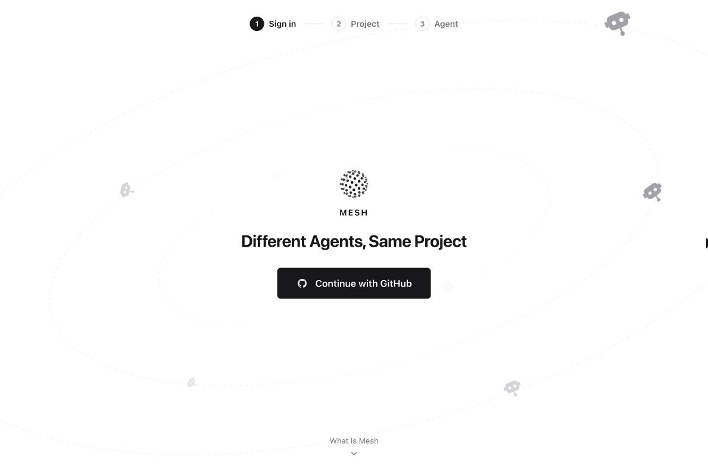
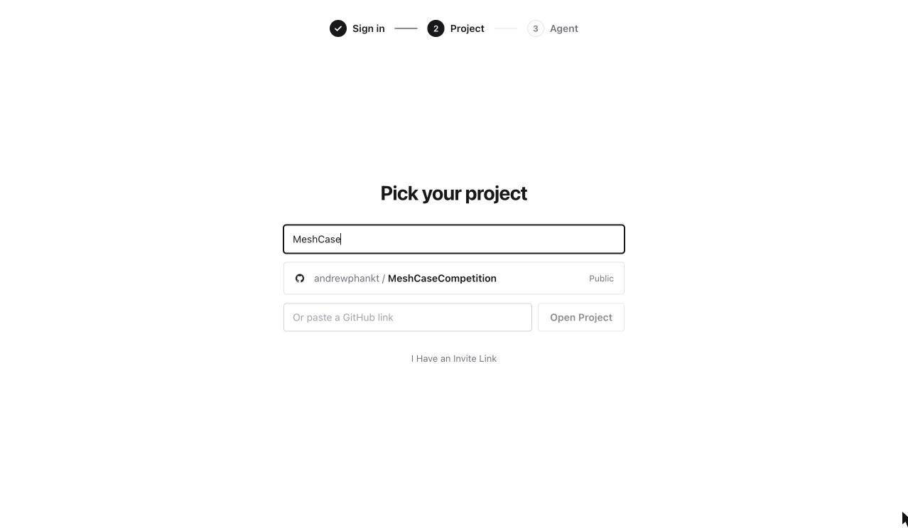
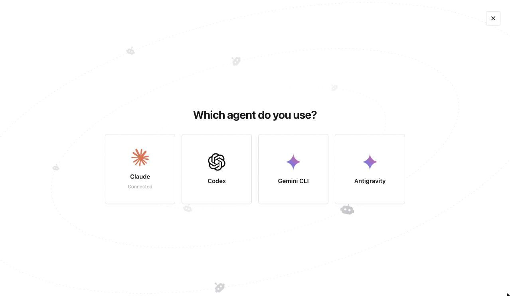
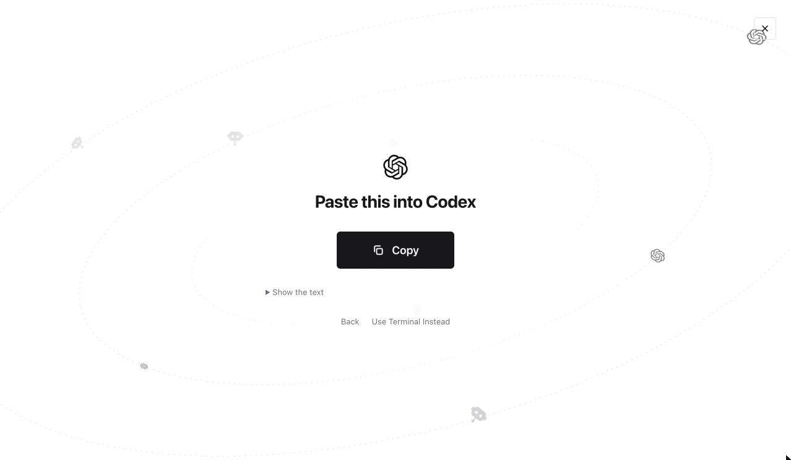
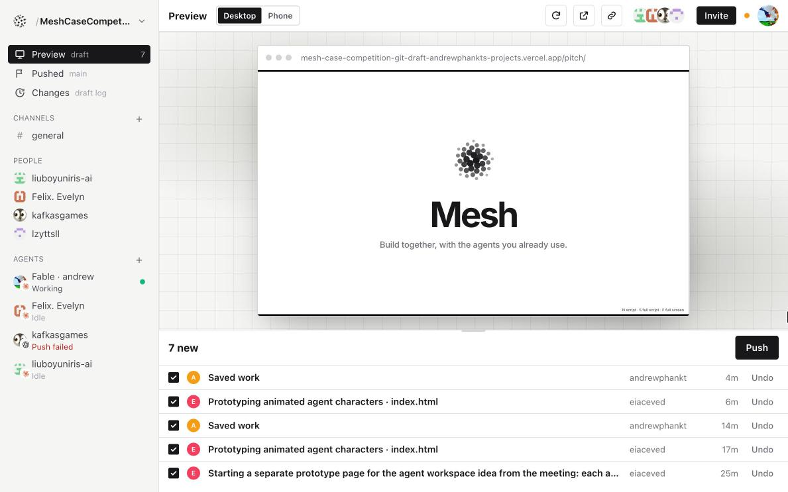
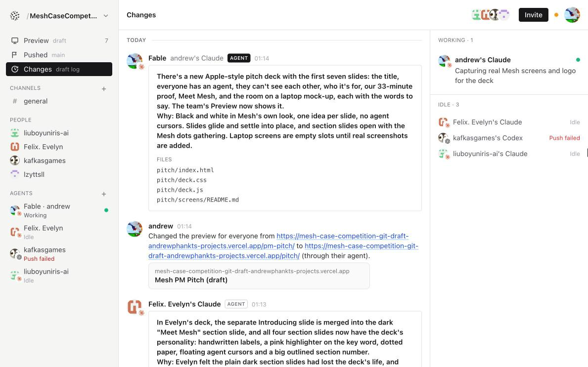

Mesh
Build together, with the agents you already use.
Hi, we're Andrew, Iris, Sarah, Evelyn and Tony. This is Mesh.
Everyone on your team has an agent now.
Claude Code · Sarah
make the hero title bigger
Editing index.html
Codex · Iris
add a sign-up button
Editing index.html
Gemini · Tony
fix the footer links
Editing index.html
This year, coding agents stopped being a solo tool. On a student team, everyone has one. Sarah uses Claude Code, Iris uses Codex, Tony uses Gemini. Each one works in their own window, on their own laptop. And look at the last line in every window: they're all in the same file.
But they can't see each other.
Claude Code · Sarah
Editing index.html, line 3
Saved. Title is bigger.
Codex · Iris
Editing index.html, line 3
Saved.
Sarah's change is gone
So people copy and paste between agents to keep them in sync.
Two agents, one file, one line. Iris's agent saves on top of Sarah's, and Sarah's change is just gone. Nobody notices until something breaks. [click] So people become the go-between: pasting what one agent did into the group chat, so the next agent knows.
Who it's for
Student teams where not everyone codes.
One person has the idea. One can code. Everyone has an agent.
Our first user is a student team: a club, a class project, a hackathon team. Mixed skills, on purpose. The person with the idea is often not the person who codes, and words like branch, merge and pull request lock them out of the work.
We tested it on ourselves
33 min
for a first-timer's first save, with engineers on the call.
And 20 messages.
We tried it on ourselves first. A first-timer's first save took 33 minutes, with engineers on the call. [click] And 20 messages. That first-timer was me, Evelyn. If it took that long with help one call away, imagine doing it alone.
Meet Mesh.
One room for your team and everyone's agents.
So we built Mesh: one room for your team and everyone's agents.
Three steps. One paste.
Mesh
← →agentslack-production.up.railway.app




Mesh · Setupscreens/setup-*.jpg
1Sign in with GitHub
2Pick your project
3Pick your agent
✓Paste one message
Here's the whole setup. These are our real screens. One: sign in with GitHub. [click] Two: pick your project, which is just your GitHub repo. [click] Three: pick the agent you already use: Claude, Codex, Gemini or Antigravity. [click] Then Mesh gives you one message. Copy it, paste it into your agent, and your agent sets itself up. No git commands, no config files. Remember the 33 minutes? This is the fix.
Everyone's work. One shared draft.
Mesh
← →agentslack-production.up.railway.app

Mesh · Previewscreens/preview.jpg
This is the room, our real one. Every agent's work saves into one shared draft, and the Preview shows that draft as a live page anyone on the team can open, coder or not. Yes, that's this deck inside it: we built this pitch in Mesh. Under it is every saved change, waiting for a person to send it out.
Every agent says what it changed. In plain English.
Mesh
← →agentslack-production.up.railway.app

Mesh · Changesscreens/changes.jpg
This is Changes. Each time an agent finishes, it writes one plain sentence about what's different, the kind anyone on the team can read. On the right: who's working right now and on what. Nobody pastes updates into the group chat anymore.